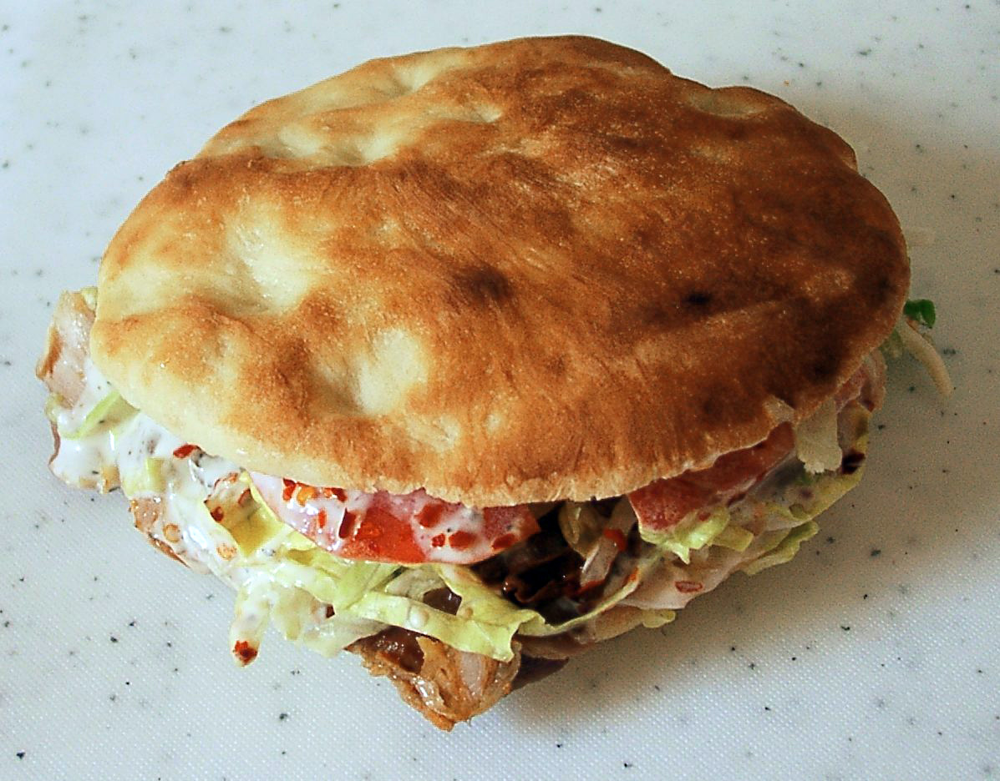
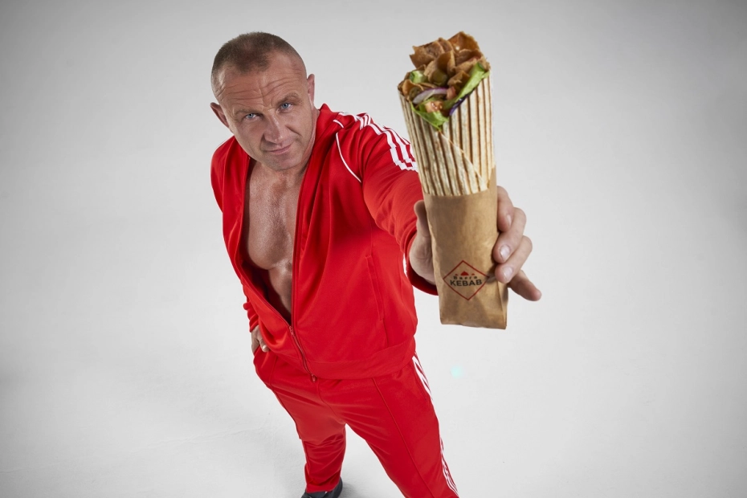

W Polsce mówiąc kebab odnosimy się zazwyczaj do döner kebab (z języku oznaczający tureckim "obracające się pieczone mięso"),
czyli danie w postaci odpowiednio doprawionego mięsa baraniego (w tym jagnięcego), skrawanego z pionowego rożna,
podawane z surówką warzywną i owczym serem. Obecnie jest to danie typu fast food.

Ze względu na ceny baraniny oraz preferencje smakowe Polaków, mięso w polskim kebabie to zwykle wołowina lub kurczak,
jedynie z dodatkiem baraniny. Nie może to być mięso wieprzowe, co wynika z Halalu (zasad Islamu).
Podawane jest w macy, picie, tortilli lub bułce z różnymi sosami najczęściej łagodnymi, ostrymi lub mieszanymi.
Wartość odżywcza dla 100 gramów typowego polskiego kebabu wynosi około 170 kcal.
